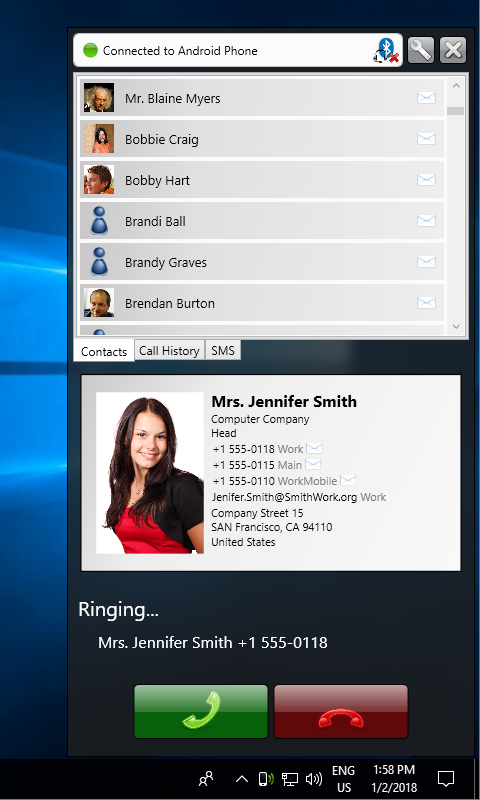
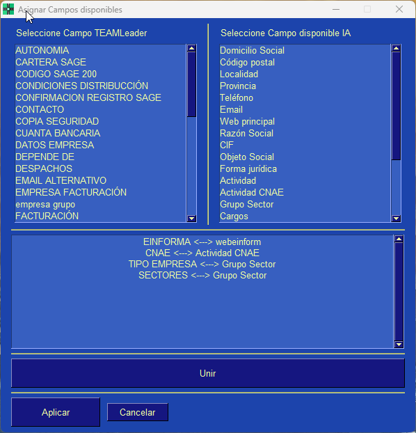

- configurar centralita teamleader
- ajustes centralita
- configuración openrouter
- api teamleader config
- grabación llamadas
- emparejamiento android
- parámetros centralita
- configurar gemini
- obs studio centralita
- campos libres teamleader
- idioma tema centralita aliases:
- /configuracion
- /ajustes
- /parametros
- /configurar-centralita
- /opciones-configuracion description: Guía completa de configuración de Centralita Teamleader: idioma, API Teamleader, OpenRouter IA, grabación de audio y emparejamiento Android. Ajusta todos los parámetros en minutos. tags:
- configuración
- ajustes
- teamleader
- openrouter
- ia
- grabación status: published
La pantalla de configuración de Centralita Teamleader te permite personalizar todos los aspectos de la aplicación: idioma, credenciales de API, configuración de inteligencia artificial, opciones de grabación y emparejamiento con dispositivos Android.
🎯 Acceder a la Configuración
Método 1: Desde el Icono de Bandeja
- Localiza el icono de Centralita en la bandeja del sistema (esquina inferior derecha)
-
Icono:

-
Click derecho sobre el icono
-
Se abrirá el menú contextual
-
Selecciona "Configuración"
- Se abrirá la interfaz web en tu navegador predeterminado
Método 2: Desde Búsqueda Manual
- Click izquierdo en el icono de Centralita
- Click en "Configuración" en la pantalla de búsqueda

🌐 Sección: Idioma y Apariencia
Idioma de la Interfaz
Centralita está disponible en 3 idiomas:
| Idioma | Bandera | Código |
|---|---|---|
| Español |  |
es |
| Inglés | en |
|
| Francés | fr |
Cambio de idioma
El cambio de idioma es inmediato. No es necesario reiniciar la aplicación.
Tema Visual
Personaliza los colores de Centralita con casi 50 temas disponibles:
Temas Oscuros (Recomendados para uso diario)
- DarkBlue16: Azul oscuro profesional ✅ Más popular
- DarkGrey16: Gris oscuro elegante
- DarkBlack1: Negro absoluto
Temas Claros
- LightGreen: Verde claro
- LightBlue: Azul claro
- LightGrey: Gris claro
Temas Especiales
- HotDogStand: Estilo retro con colores vibrantes
¿Cómo cambiar el tema?
- En configuración, sección "Apariencia"
- Desplegable "Tema visual"
- Selecciona el tema deseado
- Click en "Guardar"
- El cambio es inmediato
🔑 Sección: API de Teamleader
Esta sección contiene las credenciales necesarias para conectar Centralita con tu cuenta de Teamleader Focus.
⚠️ Requerido
Sin configurar la API de Teamleader, Centralita no podrá buscar contactos ni crear notas.
Campos Obligatorios
Client ID
- Descripción: Identificador único de tu aplicación OAuth2
- Formato:
xxxxxxxx-xxxx-xxxx-xxxx-xxxxxxxxxxxx - Obtención: Marketplace de Teamleader
Client Secret
- Descripción: Contraseña de tu aplicación OAuth2
- Formato: 40 caracteres alfanuméricos
- Seguridad: Mantener en lugar seguro, no compartir
Botón de Autorización
Click en "Autorizar Teamleader" para: 1. Abrir ventana del navegador 2. Iniciar sesión en Teamleader 3. Conceder permisos a Centralita 4. Guardar tokens de acceso automáticamente
📖 Guía Detallada de API
Para instrucciones paso a paso sobre cómo obtener las credenciales: Configurar API de Teamleader
🤖 Sección: Inteligencia Artificial (OpenRouter)
Configura el servicio de inteligencia artificial para transcripción automática de llamadas.
ℹ️ ¿Qué es OpenRouter?
OpenRouter proporciona acceso a modelos de IA avanzados (Google Gemini, GPT-4) para transcribir tus llamadas y generar resúmenes estructurados.
API Key
- Descripción: Clave de acceso al servicio OpenRouter
- Formato:
sk-or-v1-... - Obtención: https://openrouter.ai/
- Coste: ~$0.02-0.03 por llamada (2-3 céntimos)
⛔ Seguridad de la API Key
- NUNCA compartas tu API Key
- Es como una contraseña de tu cuenta
- Guárdala en lugar seguro
- OpenRouter permite establecer límites de gasto mensual
Modelo de IA
Selecciona el modelo de IA para transcripción:
| Modelo | Calidad | Coste | Velocidad | Uso Recomendado |
|---|---|---|---|---|
| google/gemini-2.5-flash-lite | Alta | Bajo | ⚡ Muy rápido | ✅ Uso diario |
| google/gemini-2.5-flash | Muy alta | Medio | ⚡ Rápido | Llamadas importantes |
| openai/gpt-4o | Excelente | Alto | 🐌 Lento | Reuniones críticas |
Recomendación
Usa Gemini 2.5 Flash Lite para el día a día. Ofrece el mejor equilibrio calidad/precio.
Prompt Personalizado
Instrucciones que la IA seguirá al transcribir las llamadas.
Prompt predeterminado:
Transcribe la llamada y genera un resumen estructurado con:
- Resumen ejecutivo (2-3 frases)
- Puntos clave discutidos
- Decisiones tomadas
- Siguientes pasos (con responsable y fecha)
- Objeciones o preocupaciones
- Información de contacto mencionada
- Etiquetas automáticas
Ejemplo de prompt personalizado:
Transcribe la llamada enfocándote en:
1. Presupuesto del cliente (importe máximo)
2. Plazos de entrega (fechas acordadas)
3. Condiciones de pago (forma y plazo)
4. Siguientes pasos con fechas concretas
A/B Testing de Prompts
Centralita permite experimentar con diferentes prompts para optimizar la calidad de las transcripciones. Consulta la documentación técnica para más detalles.
🎙️ Sección: Grabación de Audio
Configura cómo Centralita graba las llamadas telefónicas.
Modo de Grabación
| Modo | Valor | Método | Calidad | Requisitos |
|---|---|---|---|---|
| Desactivado | 0 |
No graba | N/A | - |
| Interna | 1 |
Tarjeta de sonido | Estándar | Ninguno |
| OBS Studio | 2 |
OBS Studio | Alta | OBS instalado |
Modo 1: Grabación Interna (Recomendado)
Ventajas: - ✅ Funciona sin configuración adicional - ✅ No requiere software extra - ✅ Bajo consumo de recursos
Limitaciones: - ⚠️ Solo graba micrófono - ⚠️ No graba audio del sistema (softphones)
Ideal para: - Llamadas de teléfono fijo/móvil - Usuarios que no necesitan configuración avanzada
Modo 2: OBS Studio (Avanzado)
Ventajas: - ✅ Audio de alta calidad - ✅ Graba ambos lados de la conversación - ✅ Compatible con softphones VoIP (Zoiper, 3CX)
Requisitos:
- OBS Studio instalado y ejecutándose
- Plugin obs-websocket configurado
- Puerto 4455 disponible
📖 Guía de OBS Studio
Para configurar OBS Studio, consulta la documentación técnica: Integración OBS Studio
Ruta de Grabación
Directorio donde se guardarán los archivos de audio:
- Formato:
D:\centralita_ia\rec\(ejemplo) - Requisito: Debe existir y tener permisos de escritura
- Organización: Se crean subcarpetas por fecha
⚠️ Espacio en Disco
Calcula aproximadamente 1 MB por minuto de grabación. Para 100 llamadas de 5 minutos al mes: ~500 MB.
📱 Sección: Emparejamiento Android
Configura la detección automática de llamadas desde tu teléfono Android.
ℹ️ Opcional pero Recomendado
Esta sección es opcional pero muy recomendada para automatizar completamente el flujo de llamadas.
Aplicación JustRemotePhone
Centralita utiliza la aplicación JustRemotePhone para conectar tu Android con Windows.
Requisitos: - Dispositivo Android 6.0 o superior - Aplicación JustRemotePhone instalada en Android y Windows - Ambos dispositivos en la misma red WiFi
Estado del Emparejamiento
| Estado | Descripción | Acción |
|---|---|---|
| No emparejado | No hay conexión Android | Click en "Emparejar" |
| Conectado | Android conectado y funcionando | ✅ Listo |
| Desconectado | Perdió conexión con Android | Revisar WiFi |
Botón "Emparejar"
- Click en "Emparejar"
- Escanea el código QR con tu Android
- Confirma el emparejamiento en ambos dispositivos
- Verifica conexión: Estado cambia a "Conectado"
📖 Guía Completa de Emparejamiento
Para instrucciones detalladas paso a paso: App Call Remoto - Guía Completa


🔧 Sección: Campos Libres de Teamleader
Mapea los campos personalizados de Teamleader con la información que la IA encuentra automáticamente.
¿Qué son los Campos Libres?
Son campos personalizados que creas en Teamleader para almacenar información específica: - CIF/NIF: Número de identificación fiscal - Sector: Actividad principal de la empresa - Número de empleados: Tamaño de la empresa - Volumen de negocio: Cifra de ventas anual - Cualquier otro dato personalizado
Cómo Mapear Campos
- Crear campos en Teamleader
- Ve a Configuración → Campos personalizados
-
Crea los campos que necesitas
-
Mapear en Centralita
- En configuración, sección "Campos Libres"
-
Por cada campo de Teamleader, selecciona qué información debe guardar la IA:
custom_field_cif↔ "CIF encontrado"custom_field_sector↔ "Sector de actividad"custom_field_empleados↔ "Número de empleados"
-
Guardar configuración
- Click en "Guardar"

Consejo
Los campos libres son muy útiles para segmentar tu base de datos y crear listas de marketing personalizadas.
⏱️ Sección: Tiempos de Espera
Cierre Automático de Pantalla
Tiempo de inactividad antes de que Centralita cierre automáticamente las ventanas de alta de nuevos registros.
| Opción | Tiempo | Ideal para |
|---|---|---|
| Rápido | 30 segundos | Altas rápidas, muchos registros |
| Normal | 2 minutos | Uso estándar |
| Lento | 5 minutos | Altas complejas, mucho información |
| Manual | Nunca | Cierras manualmente |
Recomendación
Usa el modo "Normal" (2 minutos) para la mayoría de casos. Si necesitas más tiempo para introducir datos, usa "Lento" (5 minutos).
🔄 Guardar y Aplicar Cambios
Botón "Guardar"
Click en "Guardar" para aplicar todos los cambios de configuración:
- ✅ Los cambios se aplican inmediatamente
- ✅ No es necesario reiniciar la aplicación
- ✅ Verás un mensaje de confirmación
Botón "Restaurar Valores por Defecto"
Restaura toda la configuración a los valores originales de fábrica.
⚠️ Pérdida de Configuración
Al restaurar valores por defecto, perderás TODA tu configuración personalizada, incluyendo API keys. Usa con precaución.
📊 Resumen de Configuración
Configuración Mínima Requerida
Para que Centralita funcione correctamente, necesitas configurar obligatoriamente:
- Idioma: Seleccionar idioma de la interfaz
- API de Teamleader: Client ID y Client Secret
- Autorizar Teamleader: Click en botón de autorización
Configuración Recomendada
Para aprovechar todas las funcionalidades:
- Idioma y tema: Personalizar interfaz
- API de Teamleader: Configurada y autorizada
- OpenRouter: API key configurada
- Modelo IA: Gemini 2.5 Flash Lite seleccionado
- Grabación: Modo interno (1) u OBS (2)
- Emparejamiento Android: Conectado
- Campos libres: Mapeados
🔧 Solución de Problemas
Problema: No puedo guardar la configuración
Causa: No tienes permisos de escritura en el archivo de configuración.
Solución: 1. Cierra Centralita 2. Ejecuta como administrador: Click derecho → "Ejecutar como administrador" 3. Intenta guardar nuevamente
Problema: La API key de OpenRouter no se guarda
Causa: Formato incorrecto de la API key.
Solución:
1. Verifica que la API key comienza con sk-or-v1-
2. Copia directamente desde OpenRouter sin espacios
3. Pega en el campo sin añadir caracteres adicionales
Problema: El emparejamiento Android falla
Causa: Dispositivos no están en la misma red WiFi.
Solución: 1. Verifica que ambos dispositivos usan la misma WiFi 2. Desactiva VPN temporalmente 3. Reinicia la aplicación JustRemotePhone en ambos dispositivos
✅ Verificación de Configuración
Test de Conexión Teamleader
Después de configurar la API:
- Click en "Test de Conexión"
- Verifica mensaje: "✅ Conexión exitosa"
- Si falla: Revisa Client ID y Client Secret
Test de OpenRouter
Después de configurar la IA:
- Click en "Test OpenRouter"
- Verifica mensaje: "✅ API Key válida"
- Si falla: Revisa API key y conexión a internet
Test de Emparejamiento
Después de emparejar Android:
- Realiza una llamada de prueba
- Verifica que Centralita la detecta
- Check: Deberías ver notificación en Windows
🎓 Próximos Pasos
Una vez configurada Centralita:
- Realiza llamadas de prueba
- Verifica detección automática
- Comprueba grabación de audio
-
Valida transcripción con IA
-
Ajusta configuración según uso
- Modifica prompt de IA si es necesario
- Cambia tema visual según preferencia
-
Ajusta tiempos de espera
-
Forma a tu equipo
- Enseña a usar la interfaz
- Comparte mejores prácticas
- Resuelve dudas iniciales
📞 Soporte
Si tienes problemas con la configuración:
- Email: soporte@alcatic.com
- Web: https://alca.co/
- Horario: Lunes a Viernes, 9:00 - 18:00 (CET)
Consejo
Para una resolución más rápida, incluye capturas de pantalla de la configuración actual.
✅ Conclusión
La pantalla de configuración de Centralita Teamleader te permite:
- ✅ Personalizar idioma y apariencia
- ✅ Conectar con Teamleader (OAuth2)
- ✅ Configurar OpenRouter (transcripción IA)
- ✅ Ajustar grabación de audio (interna/OBS)
- ✅ Emparejar dispositivo Android
- ✅ Mapear campos libres de Teamleader
- ✅ Controlar tiempos de espera
Con todo configurado correctamente, Centralita automatizará completamente el flujo de tus llamadas, desde la detección hasta la creación de notas en Teamleader.
¿Listo para configurar tu Centralita? Volver a Inicio Rápido